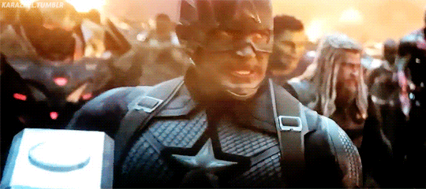
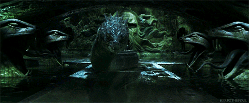
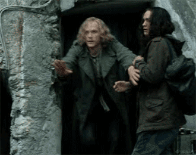

TODOS ABORDOOOOOO!!

Patrulheiro, venho aqui te convocar para uma missão, chegou seu momento... sei que se preparou para isso e a hora chegou! !
Vamos lá, segue em anexo as opções pro seu fim de semana de guerrilha (Zoas, não tem anexo hehehe)

1º) Vingadores - Ultimato
Aiai.. só de lembrar aqui, já chega a arrepiar,que filme...(Vale a pena ver todos viu, até pra entender tudo #ficaADoca
Sinopse: Após Thanos eliminar metade das criaturas vivas, os Vingadores têm de lidar com a perda de amigos e entes queridos.
Com Tony Stark vagando perdido no espaço sem água e comida, Steve Rogers e Natasha Romanov lideram a resistência contra o titã louco.
2º) Harry Potter e a Câmara Secreta
Assim se você chegou até aqui, sinto-lhe informar... vai assistir TODOS SIM! Até decorar as falas, "Não é leviossa é LEVIOSAH"
Sinopse: Após as sofríveis férias na casa dos tios, Harry Potter se prepara para voltar a Hogwarts e começar seu segundo ano na escola de bruxos.
Na véspera do início das aulas, a estranha criatura Dobby aparece em seu quarto e o avisa de que voltar é um erro e que algo muito ruim pode acontecer se
Harry insistir em continuar os estudos de bruxaria, o garoto no entanto, está disposto a correr o risco e se livrar do lar problemático.
3º) Coração de Tinta - O Livro Mágico
Pensa em um filme LINDO DEMAIS... então é esse...
Sinopse: Um homem com habilidade de dar vida a personagens de livros acidentalmente convoca um dos vilões mais perversos da literatura.
Agora, ele tem que enviar o vilão de volta para o seu mundo, antes que seja tarde demais!
4º) A Origem
Quer um filme pra ficar viajando por horas e nada fazer sentido!? É ESSE AQUI!!!
Sinopse: Dom Cobb é um ladrão com a rara habilidade de roubar segredos do inconsciente, obtidos durante o estado de sono.
Impedido de retornar para sua família, ele recebe a oportunidade de se redimir ao realizar uma tarefa aparentemente impossível:plantar uma ideia na mente do herdeiro de um império.
Para realizar o crime perfeito, ele conta com a ajuda do parceiro Arthur, o discreto Eames e a arquiteta de sonhos Ariadne. Juntos, eles correm para que o inimigo não antecipe seus passos.
5º) Batman O Cavaleiro Das Trevas
SÉRIO ESSE É O MELHOR FILME DE BATMAN COM O MEEEELHOR CORINGA DE TODOS-Você é obrigado a ver essa trilogia!

Sinopse: Com a ajuda de Jim Gordon e Harvey Dent, Batman tem mantido a ordem na cidade de Gotham.
Mas um jovem e anárquico criminoso conhecido como Coringa ganha força e decide instaurar um verdadeiro caos na cidade.
O justiceiro será testado psicologicamente e fisicamente como nunca fora antes em um confronto bastante pessoal.
Cabe a Batman encontrar uma maneira de deter o sádico vilão antes que mais vidas sejam perdidas.